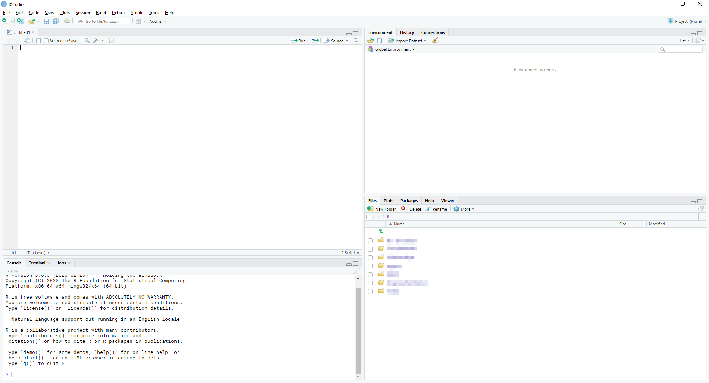

1 Installation und erste Schritte
In diesem Kapitel installieren wir die notwendige Software und machen uns mit der Benutzeroberfläche von RStudio vertraut.
1.1 R installieren
Zunächst benötigen wir natürlich R. Die aktuellste Version erhalten wir immer über CRAN (Comprehensive R Archive Network).
Unter “Download and Install R” wählen wir zunächst unser Betriebssystem. Im Falle von Windows wählen wir zusätzlich auf der folgenden Seite noch “base” (die Basisversion) aus. Es sollte dann ein Download-Link für die aktuellste Version erscheinen (3.6.3, Stand 9. April 2020). Der Installationsprozess selbst läuft wie bei anderer Software auch ab.
Neben einem Interpreter, einem Programm, das Code (in diesem Fall also Code, der in R geschrieben wurde) für unseren Computer in ausführbare Befehle übersetzt, umfasst die Installation von R auch schon eine (sehr) rudimentäre grafische Benutzeroberfläche, die aber nur wenig komfortabel und nutzerfreundlich ist. Als nächstes installieren wir daher noch RStudio.
1.2 RStudio installieren
RStudio ist eine grafische Benutzeroberfläche für R, die die Arbeit mit der Programmiersprache deutlich erleichert. Auch RStudio ist für Privatanwender komplett kostenfrei nutzbar. Die aktuellste Version kann über https://rstudio.com/products/rstudio/download/#download heruntergeladen werden.
Für den Rest des Kurses arbeiten wir immer mit RStudio (und nicht direkt mit der Oberfläche von R). Öffnen wir also zum ersten Mal RStudio.
1.3 Die Benutzeroberfläche von RStudio
Die Benutzeroberfläche von RStudio
Nach dem Starten von RStudio sollte sich das Programm Ihnen wie oben präsentieren - mit einer Dreiteilung in drei abgetrennte Bereiche. Wir beginnen mit dem großen, aktuell noch weitestgehend leeren Bereich auf der linken Seite, der Konsole.
1.3.1 Konsole
Die Konsole ist zugleich das Eingabe- und das Ausgabefenster von R bzw. RStudio. Befehle, die wir hier eingeben, werden durch Druck auf die Eingabe/Enter-Taste direkt ausgeführt. Die Konsole signalisiert uns, dass sie bereit ist, einen Befehl zu empfangen, durch ein vorangestelltes >. Wir können dies mit simplen Berechnungen ausprobieren:
(Zur Darstellung in diesem Kurs: die erste hellgraue Box umfasst hier und im Folgenden jeweils die Befehle, die wir eingeben - in diesem Fall also den Befehl 1 + 2. Die zweite hellgraue Box enthält dann immer die Ausgabe in der Konsole, gekennzeichnet durch zwei vorangestellte Rautensymbole ##.)
## [1] 3Die Konsole spuckt also direkt das Ergebnis aus – in diesem Fall 3 – und wartet auf den nächsten Befehl, wieder zu erkennen am >. Die [1] links neben dem Ergebnis gibt an, dass es sich hierbei um den ersten (und einzigen) Ausgabewert handelt. Wir werden aber noch zahlreiche Befehle kennenlernen, bei denen mehr als nur ein Wert ausgegeben wird.
Mit den Cursortasten ↑ und ↓ können wir in der Konsole durch bisher eingegebene Befehle schalten. Ein Druck auf ↑ sollte also den ersten und bisher einzigen Befehl - 1 + 2 - anzeigen.
Ist ein Befehl noch nicht vollständig, signalisiert uns dies die Konsole durch ein vorangestelltes +. Wir können dies ausprobieren, in dem wir beispielsweise eine unvollständigen Additionsbefehl eingeben: 3 +. Die Konsole wartet nun auf den restlichen Befehl - in diesem Fall können wir eine weitere Zahl eingeben und den Befehl abschließen. Alternativ können wir den unvollständigen Befehl durch Druck der ESC-Taste abbrechen.
In der Praxis passiert dies vor allem, wenn in einem längeren Befehl eine Klammer ) oder Anführungszeichen " fehlt. Sollte die Konsole also einmal die Arbeit verweigern, liegt das oft daran, dass noch ein unvollständiger Befehl vorhanden ist.
Prinzipiell könnten wir alle Arbeitsschritte über die Konsole ausführen. Das ist in der Praxis aber wenig sinnvoll, da wir im Normalfall längere und mehrere Befehle hintereinander ausführen und diese auch festhalten möchten. Wir arbeiten daher mit Skript-Dateien.
1.3.2 R-Skripte
Um eine neue Skriptdatei zu erstellen, klicken wir entweder links oben auf das Symbol mit der leeren Seite und dem grünen Plus und anschließend auf R-Script, auf File - New File - R-Script oder drücken die Tastenkombination Strg/Cmd + Shift + N. Es sollte sich im links-oberen Bildschirmviertel eine leere Skriptdatei öffnen und unser RStudio-Fenster somit in ein viergeteiltes Layout übergehen:

Hier können wir nun alle Befehle der Reihen der Reihe nach schreiben und gesammelt abspeichern. Einzelne Befehlszeilen lassen sich über die Tastenkombination Strg/Cmd + Eingabe/Enter ausführen. Das Ergebnis des Befehls erscheint dann in der Konsole. Wir können auch mehrere Zeilen auf einmal markieren und gemeinsam über dieselbe Tastenkombination ausführen. Schreiben wir z. B. mehrere Rechenoperationen hintereinander, so erscheinen deren Ergebnisse in der Ausführungsreihenfolge in der Konsole:
## [1] 4
## [1] 300
## [1] 4.25Längere Skriptdateien werden schnell unübersichtlich. Wir können aber an jeder Stelle Kommentare einfügen, indem wir eine Raute # voran stellen - alles was in dieser Zeile hinter dem Symbol steht, wird von R beim Ausführen ignoriert, wir können also sowohl ganze Zeilen auskommentieren als auch hinter R-Befehlen eine kurze Erklärung hinzufügen. Außerdem können jederzeit Leerzeilen eingefügt werden, um das Skript etwas aufzulockern:
# Zunächst ein wenig Addition
2 + 5
6 + 12
# Dann ein wenig Multiplikation
21 * 35
2345 * 1.6
# Und zum Schluss etwas komplexere Rechenoperationen
(2 + 3) ^ 3 # Das ^ steht für Exponentiation, hier also 5 hoch 3## [1] 7
## [1] 18
## [1] 735
## [1] 3752
## [1] 1251.3.3 Environment
Im rechten oberen Bildschrimbereich öffnet sich standardmäßig das Environment an, in dem RStudio alle derzeit angelegten und somit verfügbaren Objekte anzeigt. Mit Objekten werden in uns im nächsten Kapitel genauer auseinandersetzen.
Weitere Registerkarten in diesem Bereich sind die History (eine Auflistung sämtlicher ausgeführter Zeilen der aktuellen Sitzung) sowie Connections und Build, die für uns aber vorerst keine Rolle spielen werden.
1.3.4 Files
Der rechte untere Bildschirmbereich zeigt standardmäßig einen Dateibrowser (Files) an, der das aktuelle Arbeitsverzeichnis zeigt. Auch damit setzen wir uns in den kommenden Kapiteln ausführlicher auseinander.
Weitere Registerkarten in diesem Bereich sind: - Plots: hier werden Grafiken angezeigt, wenn wir diese in R erstellen. - Packages: Eine Übersicht aller installieren Packages (kurz gesagt Sammlungen von R-Funktionen, die nicht in der Basisversion enthalten sind). Auch mit Packages beschäftigen wir uns in einem eigenen Kapitel. - Help: Hier wird die Dokumentation einzelner Funktionen angezeigt, sobald wir diese anfordern. Diesen Bereich sehen wir uns an, sobald wir uns mit Funktionen beschäftigen. - Viewer: Hier kann RStudio Webinhalte anzeigen, die mit R-Funktionen erstellt wurden. Dies wird vorab keine Rolle für uns spielen.
1.4 RStudio anpassen
Unter Profile - Global Options können wir RStudio nach unseren Wünschen anpassen. Die einzelnen Einstellungsmöglichkeiten sollen hier nicht ausführlich diskutiert werden; hier jedoch einige sinnvolle Einstellungen:
Global Options in RStudio
Im Bereich General ist es sinnvoll, zwei Anpassungen vorzunehmen. Zum einen können wir unter R Sessions ein Default working directory (also ein standardmäßiges Arbeitsverzeichnis) einstellen. Dieses Verzeichnis öffnet R dann beim Start automatisch. Hier bietet es sich an, einen eigenen Ordner anzulegen.
Unter Workspace entfernen Sie bitte, falls vorhanden, das Häkchen bei Restore .RData into workspace at startup und stellen Save workspace to .RData on exit auf Never. Zwar mag es praktisch erscheinen, dass RStudio automatisch die zuletzt bearbeitete Session wiederherstellt, das führt in der Praxis aber gerne zu Konflikten und Problemen – und letztlich ist es längerfristig auch sinnvoller, sich einen Arbeitsprozess anzueignen, bei dem Skripte schnell den jeweiligen Arbeitsstand wiederherstellen.
Anzeigeeinstellungen in RStudio
Eher Geschmackssache sind die Anzeigeeinstellungen, die Sie unter Appearance vornehmen können. Hier können Sie die Schriftart und -größe im Skripteditor einstellen sowie unter verschiedenen Themes (Farbschemata) wählen (darunter auch “dunkle” Themes, also solche, die hellen Text auf dunklem Hintergrund bieten). Am besten, Sie probieren hier unterschiedliche Einstellungen aus, bis Sie ein subjektiv angenehmes Anzeigebild von RStudio gefunden haben.
1.5 Übungsaufgaben
Diese Aufgaben sollen Sie lediglich mit den grundlegendsten Funktionen von RStudio vertraut machen. Sie müssen daher keine Dateien abgeben.